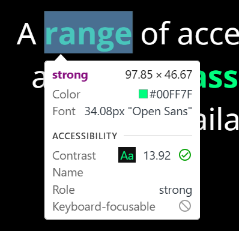

I'm also head of web standards at Samsung Research and Development Institute UK, where we have a
great team working on all sorts of web platform improvements, within W3C, representing Samsung Internet, our
browser.
In this talk, we're going to be covering…
Accessibility speedrun
Accessibility in terms you know
Practical things you as a content author/developer can do
The main motivation for this talk is that…
Fear is the mind-killer.
Frank Herbert, Dune
This is particularly true when lost of us think about web accessibility.
Web Accessibility
Thinking about web accessibility often leads quite quickly to thinking about assistive technologies,
or "AT" for short. And, of course, one of the most well-known assistive technologies is the screen
reader…
Assistive technologies
This is a picture of a Terminator, not a screen reader—but it accurately summarises how we feel
when booting up a
screen reader for the first time, and trying to make sense of what it's saying. However, there is hope, becuase,
as several people through the ages have observed…
However, as many people have observed over the years, knowledge is power—and not only this, but
as
developers, you already have the knowledge you need to
make sense of accessibility. I hope to show you this during the rest of this talk.
All that being said, it's super-important to bear in mind that this is a very
focused story. We'll use a screen reader during this talk but, in practice, Aarange of accessibility
barriers exist, and a
range of assistive
technologies (ATs) are available to address them.
And even more importantly, please bear in mind that this talk is mainly aimed at helping
developers understand how accessibility works technically. In practice, it's vital to consider
accessibility from the inception of a project, and at all stages—exactly as Geri has
outlined in her talk
on "shifting left".
1. Accessibility speedrun
What do you think this form is about? This one doesn't have any visible labels, so it can be hard to
tell. This is a visual analogue of how someone who can't see the screen might experience the form if it's not
labelled properly.
Example 1a
Let's check out what this might be like with correctly-associated labels…
If you guessed that it's a log-in form, you'd be right. This one uses standard HTML means to
associate visible labels with the controls. But if we Tab around this when running a screen reader, we
find that the button isn't announced as expected…
Example 1b
So, how can we ensure that the UI and content we build is accessible?
How do we make things accessible?
Don't make them inaccessible.
It sounds flippant, but there's a lot of truth in this advice—the web platform gives us many
ways to easily ensure that our content is accessible, for example:
Indicating the nature of the regions of the page (we'll talk a bit more about the accessibility
benefits of these elements towards the end of the presentation):
<main>
<nav>
…
But what makes these standard elements accessible?
…and what if you want to make your own custom element, a
<my-super-widget>? How do you make that accesible?
One primary example of things you can't do (yet) with standard HTML is putting images inside of a
<select> element. This is a common ask from developers, but requires a custom element,
because the standard one doesn't provide this functionality.
Well the good news is that the Open UI project is working on making things like this a reality—check out
their site for more info!
We can use the W3C's Web Content Accessibility Guidelines. They contain a lot of technical checkpoints, but they're grouped into four numbered sections,
under four fundamental and pretty relatable principles. If you make sure your content is all of these things,
then it'll be accessible to a range of people, across
devices, browsers, and assistive technologies:
Perceivable—in order to be able to get anything out of it, the user
has to be able to take it in.
Operable—it must be possible to interact with the content.
Understandable—content is only useful if it makes sense to the
person browsing it.
Robust—people could be using a range of browsers, assistive
technologies, and/or devices to access the content, and it needs to work across these.
For detailed information on how to actually do this, consult the WCAG Quick Reference (which
actually provides links to a lot of great, deep info).
But again, how come following these guidelines actually works? We'll expand upon this later,
but to start understanding this, we need
to consider how web content is usually delivered to the user. We can think of a simple flow of content, from the
server to the user, via the browser:
Content
Browser (User Agent)
User
When someone's using an assistive technology, then conceptually we can see it as part of the browser.
The browser exposes certain relevant info to the assistive technology, which then renders that
info in an appropriate way for the user.
Content
Browser (User Agent)
Assistive technology (AT)
User
In addition, the user may provide input to the web app/content via the assistive technology
(e.g. via speech recognition, instead of typing). In this case, the web app/content still recieves the input it
was expecting (e.g. text) in a standard way, via OS APIs, and the standard textbox control and events in the
browser, and doesn't (and ideally shouldn't) know how the text was input.
So, how does this exposing of info actually work? Where does the info come from, and how can we understand, and
debug it?
2. Accessibility in terms you know
As a developer, you already understand the fundamentals of how this process works, because you work with the
following every day…
Tree data structures
The idea of objects that have properties
Orders of precedence
We'll explore each of these next.
🌲objects & properties>
The accessibility tree
Let's consider a simple page, with a figure and a button. The figure has some alternative text, and the button might, in some frameworks, end up being wrapped in multiple layers of <div>s, creating the infamous "<div> soup" effect. If you inspect this page in the DevTools DOM panel, you get a representation of the living DOM tree in memory. It looks like HTML, but it's live and you (and your scripts) can do anything with it.
But what sort of info is important to assistive technologies? Definitely similar stuff: the order or structure; some of the types of elements (the semantic ones); and things like content alternatives for images, for example. Some other stuff isn't so important—the semantically-neutral <div> soup could be losslessly stripped out, for example.
If you activate the accessibility tree view in the DevTools, you'll find something similar to the DOM, but pared back in some ways (and maybe quite detailed in others). The accessibility tree provides the subset of the DOM tree that is relevant to assistive technologies, and it is the thing that assistive technologies can query in order to do their job of both presenting the content in the appropriate way for the user, and in some cases to help the user navigate about the page.
Example 2
Objects & properties
When the browser loads the page into memory, and creates the Document Object Model (DOM) tree, it
brings each HTML element to life—perhaps as some kind of content, or perhaps as an interactive control. The
"living" DOM tree elements (or even some parts of them) can be thought of as objects. Depending on the
source element, the corresponding DOM tree node object may have a number of different properties. For example, an
image has a source, and an anchor (link)
has a
destination.
<a href="…">ACME Home Page</a>
<img src="…" alt="ACME">
From an accessibility perspective, the important properties that any element may have are:
Name
what's it called?
Description
ancillary info
Role
what does it do?
State
what's been done to it?
Value
input from the user
We'll explore some examples of these next. Not every type of property is applicable to every type of
element. Also, in some cases, the way to make something accessible is actually to provide a different,
alternative, version of it—we'll see an example of this, too. Also, for simplicity, we'll discount some
elements have a standard disabled property set, as this is one you have probably come across
before—but it, too, does have an impact on accessibility and usability, because if an element is
disabled, it is not possible to interact with it.
Buttons
Name
Release the hounds
Description
(not set)
Role
Button
State
(not applicable)
Value
(not applicable)
Textboxes
Name
(not set—very naughty!)
Description
(not set)
Role
Textbox
State
(not applicable)
Value (when example is loaded)
text in a box
If we were to use the DevTools to add a <label> element that is associated with
the textbox, then it would have an accessible name, and be providing all the required info for the user,
via any assistive technology they may be using.
Checkboxes
Name
(not set—very naughty!)
Description
(not set)
Role
Checkbox
State
(not applicable)
Value (when example is loaded)
checked
Images
Name (from alt attribute value)
Samsung Internet Browser
Description
(not set)
Role
Image
State
(not applicable)
Value
(not applicable)
Bringing it together
The above examples pratically demonstrate why the best practices, that you already follow, and that we discussed earlier actually work: Standard HTML elements expose these properties for you.
Though sometimes you need to provide appropriate attribute values, or
alternative
content, you get all the accessibility info exposed, and all the keyboard, touch, and any other input handling, for free with standard HTML elements.
The converse is also true. If you're making custom widgets, you need to provide all of this
information…
…and the behaviour…
…(including keyboard handling)…
…and the styling!
You can ensure the correct information is exposed via the following attributes.
role
aria-*
You may've seen these attributes before. They come from a W3C specification calledAccessible Rich Internet Applications. This gives you
the mechanism for providing these important properties to elements that don't automatically expose them, and
explains the rules around doing so.
The ARIA spec can be challenging to dive in to, as it's meant for both browser engine implementors as
well as developers. You can find some clear, practical examples across a range of widget types in the ARIA
Authoring Practices Guide (APG).
However it's vital to understand that all the ARIA markup does is expose the accessibility
info—it doesn't
affect the behaviour or styling—that's still all down to you.
Order of precedence
Orders of precedence come up a lot in computing, and you have most likely come accross them before. The next example shows how we might improve the labelling of buttons in a table, and also demonstrates the effect of the order of precedence we use to calculate an element's accessible name.
This table represents a shopping basket with some items in it. The buttons at the end of each row are for deleting that item from the basket. They are standard HTML button elements, labelled by a unicode "wastebasket" character—which is announced correctly as "wastebasket"e; by screen readers. Also, if you Tab around the table, moving between rows will cause most screen readers to announce the row header (if semantically provided) before the name of the button, so you'd hear something like "Pineapple Wastebasket button" and "Ironing board Wastebasket button" as you Tab into and through the table.
Example 3
Item
Quantity
Price
Pineapple
42
£111.30
Ironing board
1
£10.59
This behaviour is quite helpful already, but we can improve it. One way that people using screen readers navigate is to bring up a list of controls, such as a list of buttons, on the page. In this case, having the buttons labelled just "wastebasket" isn't very helpful. Also the idea of a bin meaning "delete" may be clear to some, but it's quite a visual metaphor, and may not be clear to everyone (visually-browsing or otherwise).
So the first thing we could do is to inspect the <button> elements, and see indeed that their accessible names come from their contents: the Unicode "wastebasket" character.
We could then override this by supplying each <button> element with an aria-label="Remove" attribute that gives it an invisible accessible name of "Remove", which would be announced by a screen reader. In fact, if you inspect the <button> now, you will see that the previous name (the wastebasket character) has been superceded by the aria-label value. This is becuase aria-label has higher precedence in the accessible name calculation than the contents of the element.
But we've just made the names clearer—we've not solved the ambiguity problem: they're all just going to be called "Remove" now instead.
We can solve this by employing two neat tricks; one of which we just used:
We can override the accessible name of the button again, by using the highest-precedence aria-labelledby attribute—which takes the IDs of the elements whose contents should form our buttons' accessible names, rather than a text string that directly is intended to be the accessible name.
We can make that aria-labelledby attribute value self-referencing—so it uses the button's current name (from its existing aria-label attribute in conjunction with the table's row header).
Sounds complicated, but it's as simple as just adding another attribute to the <button> element: aria-labelledby="remove-1 item-1" for example. Check it out and you'll see the effect in the accessibility inspector, and in a screen reader. Voilà: bringing up a list of buttons (if you do the same thing to the other one!) will clearly show which button does what.
We can now understand what was going wonky in the first example, where the visually-apparent "Log in" button was being announced as "Sign in": this was becuase an aria-label attribute had been set to override the text within the <button> element. You might think this is a contrived example—and, technically, this one is, because I made it on purpose—but this sort of thing happens loads in the wild; partly becuase many frameworks get a bit over-the-top about setting attributes like aria-label.
Example 1b
Frameworks do this in an effort to be helpful, no doubt, but as the saying goes: "ot of sight, out of mind" and this is especially true if you're not aware that your framework is doing this, nor the huge impact doing this could have if—or rather when, inevitably—the two competing "labels" go out of synch.
This is why it's such good practice to:
Try to keep all important text visible on the page, for everyone. Don't make things just for people you think are using some sort of assistive technology (quite often this leads to wrong assumptions of all kinds, as helpfully as it may be intended).
If you must provide an invisible accessible name, like in the table example above, which referenced the row header: again, try to use aria-labelledby to ensure that the association is made to another visible element on the page, to avoid repetition, and synchronisation issues in future. Or, at the least, be sure that your framework or back-end code is architected in a clean, "don't repeat yourself" manner.
3. Practical tools
We've already been using a hugely important one: your browser's DevTools. You'll already be familiar
with them, but perhaps you've now seen some parts of them that you have not used much before. Whilst the DevTools
are extremely helpful, there are some more fundamental tools you probably have, and you've probably already done
some accessibility inspection with them, without knowing it…
🐁
The mouse
You can do a lot of casual debugging, as we've seen, with the mouse.
Here we see an example of the sort of info in a pop-up that you can get when using the DevTools inspector, and hovering over an element. You can get information on the element's role, state, and other interactivity properties and even the contrast ratio between text foreground and background.

Also, you can do some spot-checking that can tell you if a visually apparent label is likely associated with a form control. As we discussed before, you know it's best practice to use a <label> element, and make the association semantically. That causes the accessible name of the form control to be set for you. It also makes the visible label act as a larger click, or touch, area for toggling checkboxes, or focusing textboxes. This makes it a lot easier for many of us to use.
In the example below, the same visually-apparent label is present next to each checkbox, but the second one is correctly associated in this way.
Example 4
Agree to terms and conditions
Now, it's true that the techniques for manually providing accessibility info that we've discussed could be used in both of these examples to counter-intuitive effects…
It's possible to use an aria-labelledby attribute to link the non-<label> visible text programmatically to the first checkbox—but whilst that would give the first checkbox a suitable accessible name, it wouldn't bring the advantage of the larger click/touch target.
It's also possible to take the second, correctly-associated example, and explicitly set an aria-label attribute on the checkbox—that would override the accessible name, so it may no longer match the visible <label>, but the larger click/touch target behaviour would be preserved.
Both of those cases demonstrate the need for more than just spot checks, but you can get a good impression of the level of consideration of accessibility that went into a site or app by making checks like this.
⌨️
The keyboard
This is where it gets interesting; you can oftne highlight a wide range of accessibility barriers posed by a
site or app by interacting with it via the keyboard. This is because a lot of assistive technologies (the interaction side of them, at least) either emulate, or are some kind of keyboard (e.g. for inputting text that was recognised from the user's speech).
In this example, a thing that looks like a button is provided in between the text box and the link, but it only looks like a button when you use the mouse: if you use the keyboard, you find that it's not really a button at all!
Another way that using the keyboard can help you find accessibility barriers is that it can highlight (maybe that's the wrong word) situations in which your focus indication is poor or lacking. Try using a site or app with the keyboard alone, and see if you can always be clear as to "where you are" on the page.
Browser limitations
The DevTools are awesome, but there are some things browsers don't show you—or at least don't show you in
much detail (yet).
For example,
there are a set of HTML elements that automatically create invisible regions of the page, called
"landmark
regions". These landmarks provide a broad overview of the content on the page, and thus can be really
helpful for
people using assistive technologies, because they can help users do things like skip over the navigation links,
straight to the main content, or otherwise quickly access the part of the page they're after. Check out my a11yTO talk on Landmarks for more info. Anyway,
those elements are:
<aside>
<footer>
<header>
<main>
<nav>
<section>
Whilst DevTools does show you the role that an element is exposing, there's currently no way to highlight
landmarks visually (for debugging), nor is there a way to bring up a tree of landmarks on the page. Such
debugging tools would be helpful, because some elements only form landmark regions if they're given accessible
names, or in other circumstances.
It's also of note that browsers don't currently expose landmark regions to keyboard users who are not
using some sort of assistive technology, which would also be pretty cool, but that's outside the scope of
DevTools.
To acheive all of the above today, you can use extensions—which could become part of the browser, as well
as part of the DevTools, in future.

{kind=link}
.png){kind=link}
{kind=link}